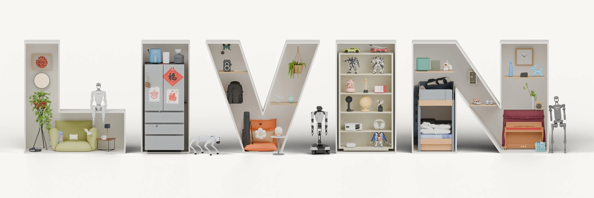

3D Perception Benchmark
Detection
| GT | SceneScript | EFM3D | SpatialLM | Boxer |
|---|---|---|---|---|
Reconstruction
| GT | ShapeR | Gen3DSR | SAM3D | RecGen | Fire3D |
|---|---|---|---|---|---|

Benchmarking Spatial and Embodied Intelligence in Digital Twins of Lived-In Homes
Updated scene panoramas are being prepared.
01 / 08 selected homesPrevious scene preview · updated renders pending
| GT | SceneScript | EFM3D | SpatialLM | Boxer |
|---|---|---|---|---|
| GT | ShapeR | Gen3DSR | SAM3D | RecGen | Fire3D |
|---|---|---|---|---|---|
Citation
Citation metadata from arXiv:2610.12069.
@misc{xu2026livin,
title = {{LIVIN}: Benchmarking Spatial and Embodied Intelligence in Digital Twins of Lived-In Homes},
author = {Peijun Xu and Chuansen Nie and Yiyang He and Yinuo Bai and
Jingyang Liu and Kuixiang Shao and Yuyang Jiao and Kuanhao Xia and
Jiayi Zhu and Zitian Yang and Yanqi Zhang and Tianye Tan and
Shuwei Di and Junyi Xu and Jingyi Yu and Jiayuan Gu},
year = {2026},
eprint = {2610.12069},
archivePrefix = {arXiv},
primaryClass = {cs.CV},
doi = {10.48550/arXiv.2610.12069},
url = {https://arxiv.org/abs/2610.12069}
}